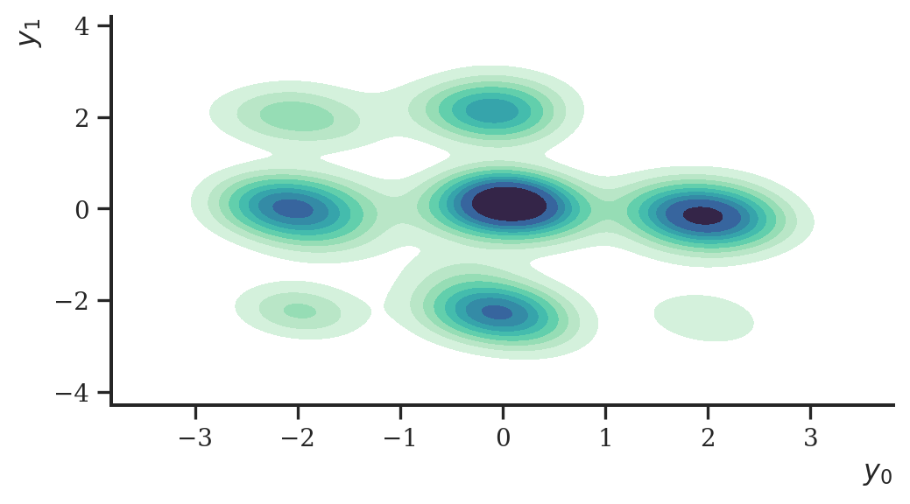

import numpy as np
import pandas as pd
import jax
from jax import numpy as jnp, lax, nn, random
import optax
import haiku as hk
import distrax
import matplotlib.pyplot as plt
import seaborn as sns
import arviz as az
import palettes
sns.set(rc={"figure.figsize": (6, 3)})
sns.set_style("ticks", {'font.family': 'serif', 'font.serif': 'Merriweather'})
palettes.set_theme()Diffusion models
Diffusion probabilistic models (DPMs), or generative diffusion processes, have attracted significant attention for generative modelling in the last couple of months. Similiarly to normalizing flows, DPMs model data iteratively via a set of transformations. The main idea of DPMs is to first add noise to a data set and then learn a reverse Markovian process that denoises the disrupted data and thus allows generating data from white noise. In this case study, we’ll reimplement the the vanilla model introduced in Sohl-Dickstein et al. (2015). To implement the models, we’ll use Jax, Haiku, Distrax and Optax.
Diffusion models
We briefly discuss diffusion probabilistic models as introduced in Sohl-Dickstein et al. (2015). For details, please refer to the original paper or Ho, Jain, and Abbeel (2020). Diffusion models are latent variable models of the form
\[ p_\theta \left( \mathbf{y} \right) = \int p_\theta \left( \mathbf{y}, \mathbf{z}_{1:T} \right) d\mathbf{z}_{1:T} \]
The above marginal is obtained by integrating over latent variables \(\mathbf{z}_{1:T}\) which have the same dimensionality as the data \(\mathbf{y}\). The joint distribution \(p_\theta \left( \mathbf{y}, \mathbf{z}_{1:T} \right)\) is defined via learned Markovian transitions
\[ p_\theta \left( \mathbf{y}, \mathbf{z}_{1:T} \right) = p_\theta(\mathbf{x} \mid \mathbf{z}_1) \prod_{t=2}^T p_\theta(\mathbf{z}_{t - 1} \mid \mathbf{z}_t) \; p(\mathbf{z}_T) \]
where \(p_\theta\) is parameterized via a neural network. In comparison to other latent variable models, however, diffusion models start my assuming a forward process that iteratively corrupts a data set \(\mathbf{x} \sim q(\mathbf{y})\) via diffusions
\[ q\left(\mathbf{z}_{1:T}, \mathbf{y}\right) = q(\mathbf{y}) q(\mathbf{z}_{1} \mid \mathbf{y}) \prod_{t=2}^T q(\mathbf{z}_{t} \mid \mathbf{z}_{t - 1}) \]
that have a fixed schedule
\[ q(\mathbf{z}_{t} \mid \mathbf{z}_{t - 1}) = \mathcal{N}\left( \sqrt{1 - \beta_i} \mathbf{z}_{t - 1}, \beta_i \mathbf{I} \right) \]
Hence, diffusion probablistic models assume a fixed approximate posterior and learn the generative model \(p_\theta\).
Implementation
Using the equations above, we can implement a DPM ourselves without much coding. With JAX and Haiku, a DPM could be implemented like that:
class DPM(hk.Module):
def __init__(self, beta_schedule, reverse_process):
super().__init__()
self._reverse_process = reverse_process
self.n_diffusions = len(beta_schedule)
self.beta_schedule = beta_schedule
def __call__(self, method="reverse_loc_and_log_scale", **kwargs):
return getattr(self, method)(**kwargs)
def _diffuse(self, z, beta):
e = distrax.Normal(jnp.zeros_like(z), 1.0).sample(seed=hk.next_rng_key())
z = jnp.sqrt(1.0 - beta) * z + jnp.sqrt(beta) * e
return z
def reverse_loc_and_log_scale(self, y):
# forward diffusion
zs = [y] + [None] * self.n_diffusions
for i, beta in enumerate(self.beta_schedule):
zs[i + 1] = self._diffuse(zs[i], beta)
# reverse diffusion
locs, log_scales = [None] * self.n_diffusions, [None] * self.n_diffusions
for i in np.arange(self.n_diffusions - 1, -1, -1):
loc, log_scale = jnp.split(self._reverse_process(zs[i + 1]), 2, axis=-1)
locs[i] = loc
log_scales[i] = log_scale
return zs, locs, log_scales
def reverse_diffusion(self, z):
for _ in np.arange(self.n_diffusions):
loc, log_scale = jnp.split(self._reverse_process(z), 2, axis=-1)
e = distrax.Normal(jnp.zeros_like(z), 1.0).sample(seed=hk.next_rng_key())
z = loc + jnp.exp(log_scale) * e
return zThe function reverse_loc_and_log_scale first computes the forward process to sample all latent variables, and then, starting from the \(\mathbf{z}_T\), computes the reverse process, or rather the locations and scales of each Gaussian transition, which are parameterized by a neural network.
Using Haiku, we construct and initialize a DPM like this:
n_diffusions = 5
beta_schedule = jnp.linspace(10e-4, 0.02, n_diffusions)
def _dm(method, **kwargs):
reverse_process = hk.Sequential([
hk.Linear(256), jax.nn.leaky_relu,
hk.Linear(256), jax.nn.leaky_relu,
hk.Linear(256), jax.nn.leaky_relu,
hk.Linear(2 * 2),
])
return DPM(beta_schedule, reverse_process)(method, **kwargs)
diffusion = hk.transform(_dm)In the model above, we are only using 5 diffusions. In practice, we should set this number higher to ensure that the distribution of last latent variable \(\mathbf{z}_T\) is approximately standard normal. However, as we will see later, optimizing an objective with \(T = 1000\) is extremely inefficient and for demonstration we limit ourselves to only 5 diffusions.
Data
Let’s test the model on a synthetic data set. We sample data from the frequently found “nine Gaussians” distribution. The data set consists of nine fairly well separated Gaussian distributions which is a fairly difficult data set to learn the density of.
K = 9
means = jnp.array([-2.0, 0.0, 2.0])
means = jnp.array(jnp.meshgrid(means, means)).T.reshape(-1, 2)
covs = jnp.tile((1 / 16 * jnp.eye(2)), [K, 1, 1])
probs = distrax.Uniform().sample(seed=random.PRNGKey(23), sample_shape=(K,))
probs = probs / jnp.sum(probs)
d = distrax.MixtureSameFamily(
distrax.Categorical(probs=probs),
distrax.MultivariateNormalFullCovariance(means, covs)
)
n = 10000
y = d.sample(seed=random.PRNGKey(2), sample_shape=(n,))The sampled data looks like this:
df = pd.DataFrame(np.asarray(y), columns=["x", "y"])
ax = sns.kdeplot(
data=df, x="x", y="y", fill=True, cmap="mako_r"
)
ax.set_xlabel("$y_0$")
ax.set_ylabel("$y_1$")
plt.show()Before we train the model, we define some helper functions:
def timer(func):
from timeit import default_timer
def f(*args, **kwargs):
start = default_timer()
res = func(*args, **kwargs)
stop = default_timer()
print(f"Elapsed time: {stop - start}")
return res
return f
def _normal_from_beta(z, beta):
return distrax.Independent(
distrax.Normal(
jnp.sqrt(1.0 - beta) * z,
jnp.sqrt(beta)
)
)
def _normal(loc, log_scale):
return distrax.Independent(
distrax.Normal(
loc,
jnp.exp(log_scale)
)
)
def _std_normal(like):
return distrax.Independent(
distrax.Normal(
jnp.zeros_like(like), jnp.ones_like(like)
)
)ELBO
Training of diffusion models is performed by optimizing the usual evidence lower bound (ELBO):
\[\begin{align*} \log p_\theta(\mathbf{y}) \ge \text{ELBO}(q) = \mathbb{E}_{q(\mathbf{z}_{1:T})} \Bigl[ & \log p_\theta(\mathbf{y} \mid \mathbf{z}_{1}) \\ &+ \sum_{i=1}^{T - 1} \log p_\theta(\mathbf{z}_i \mid \mathbf{z}_{i + 1}) - \sum_{i=2}^{T} \log q(\mathbf{z}_i \mid \mathbf{z}_{i - 1}) \\ & + \log p_\theta(\mathbf{z}_T) - \log q(\mathbf{z}_1 \mid \mathbf{y}) \Bigr] \end{align*}\]
We first initialize our diffusion model to get a pytree of parameters which we need for training.
params = diffusion.init(
random.PRNGKey(2),
y=y,
method="reverse_loc_and_log_scale"
)We optimize the ELBO using Optax. A single gradient step using Optax and the ELBO defined above looks, for instance, like this:
adam = optax.adamw(0.001)
opt_state = adam.init(params)
@jax.jit
def step(params, opt_state, y, rng):
def loss_fn(params):
zs, locs, log_scales = diffusion.apply(
params, rng=rng, y=y, method="reverse_loc_and_log_scale"
)
# log likelihood p(y | z_1)
log_pxz = _normal(locs[0], log_scales[0]).log_prob(y)
kl = 0.0
# note that: zs[0] == y
for i in np.arange(1, len(zs)):
# q(z_i | z_{i - 1}) where zs[0] = y
lp_q = _normal_from_beta(zs[i - 1], beta_schedule[i - 1]).log_prob(zs[i])
# p(z_i | z_{i + 1})
if i != n_diffusions:
lp_p = _normal(locs[i], log_scales[i]).log_prob(zs[i])
# p(z_T)
else:
lp_p = _std_normal(zs[i]).log_prob(zs[i])
kli = lp_q - lp_p
kl += kli
loss = -jnp.sum(log_pxz - kl)
return loss
loss, grads = jax.value_and_grad(loss_fn)(params)
updates, new_opt_state = adam.update(grads, opt_state, params)
new_params = optax.apply_updates(params, updates)
return loss, new_params, new_opt_stateWe use batch sizes of 128 and run the optimizer for 2000 epochs.
prng_seq = hk.PRNGSequence(42)
batch_size = 128
num_batches = y.shape[0] // batch_size
idxs = jnp.arange(y.shape[0])
@timer
def optim(params, opt_state, n_iter = 2000):
losses = [0] * n_iter
for i in range(n_iter):
loss = 0.0
for j in range(batch_size):
ret_idx = lax.dynamic_slice_in_dim(idxs, j * batch_size, batch_size)
batch = lax.index_take(y, (ret_idx,), axes=(0,))
batch_loss, params, opt_state = step(params, opt_state, batch, next(prng_seq))
loss += batch_loss
losses[i] = loss
return params, losses
params, losses = optim(params, opt_state)
losses = jnp.asarray(losses)Elapsed time: 1425.26195This took quite some time even though we only used five diffusion steps. It also demonstrates why this objective is not very efficient to compute and prohibits a larger number of diffusions. Before we derive a more efficient objective, let’s have a look at some plots and if training actually worked.
Let’s have a look if the ELBO converged:
ax = sns.lineplot(
data=pd.DataFrame({"y": np.asarray(losses), "x": range(len(losses))}),
y="y", x="x",
color='black'
)
ax.set(
xlabel="", ylabel="-ELBO",
xticks=[], xticklabels=[],
yticks=[], yticklabels=[]
)
plt.show()Having trained the model, we can sample from the diffusion model like this:
prior = distrax.Normal(jnp.zeros(2), jnp.ones(2))
z = prior.sample(
seed=random.PRNGKey(33),
sample_shape=(5000,)
)
y_hat = diffusion.apply(
params, rng=random.PRNGKey(1),
z=z, method="reverse_diffusion"
)
ax = sns.kdeplot(
data=pd.DataFrame(np.asarray(y_hat), columns=["x", "y"]),
x="x", y="y", fill=True, cmap="mako_r"
)
ax.set(xlabel="$y_0$", ylabel="$y_1$")
plt.show()But for the sake of demonstration, this worked nicely! Visually, the estimated density is somewhat close to the original data set. To improve it, we could, for instance, increase the number of diffusions or use a more suitable network architecture.
A better objective
Given this simple neural network architecture and low sample size, training the objective took inacceptably much time. We can, however, use the following insight to define an objective that is easier to train. Since the forward transitions are all Gaussians, we can analytically integrate out intermediate steps, yielding:
\[ q \left( \mathbf{z}_t \mid \mathbf{y} \right) = \mathcal{N} \left( \sqrt{\bar{\alpha}_t}\mathbf{y}, \left( 1 - \bar{\alpha}_t \right) \mathbf{I} \right) \]
Using Bayes rule, we can in addition derive the posterior of this process using:
\[\begin{align*} q \left( \mathbf{z}_{t - 1} \mid \mathbf{z}_{t}, \mathbf{y} \right) & = \frac{q \left( \mathbf{z}_{t} \mid \mathbf{z}_{t-1} , \mathbf{y} \right) q\left( \mathbf{z}_{t-1} \mid \mathbf{y} \right) }{q \left( \mathbf{z}_{t} \mid \mathbf{y} \right) } \\ & = \mathcal{N} \left( \tilde{\boldsymbol \mu}_t\left( \mathbf{z}_{t}, \mathbf{y}\right) , \tilde{\beta}_t \mathbf{I} \right) \end{align*}\]
where
\[ \tilde{\boldsymbol \mu}_t\left( \mathbf{z}_{t}, \mathbf{y}\right) = \frac{\sqrt{\bar{\alpha}_{t - 1}} \beta_t }{1 - \bar{\alpha}_{t}} \mathbf{y} + \frac{\sqrt{\alpha} \left( 1 - \bar{\alpha}_{t - 1} \right) }{1 - \bar{\alpha}_{t}} \mathbf{z}_t \]
and
\[ \tilde{\beta}_t = \frac{1 - \bar{\alpha}_{t - 1}}{1 - \bar{\alpha}_{t}} {\beta}_t \]
Plugin these derivations into the ELBO gives us the following:
\[ \mathbb{E}_{q} \biggl[ \log p_\theta \left(\mathbf{y}, \mathbf{z}_1 \right) - \sum_{t=2}^T \mathbb{KL}\Bigl[ q(\mathbf{z}_{t - 1} \mid \mathbf{z}_{t}, \mathbf{y}), p_\theta(\mathbf{z}_{t - 1} \mid \mathbf{z}_t) \Bigr] - \mathbb{KL}\Bigl[ q(\mathbf{z}_T \mid \mathbf{y}), p_\theta(\mathbf{z}_T) \Bigr] \biggr] \]
Instead of sampling all T \(\mathbf{z}_i\)s, we can instead only optimize the first and the last part and one summand of the sum over the \(t\)s
\[ \mathbb{E}_{q, t \sim \mathcal{U}} \biggl[ \log p_\theta \left(\mathbf{y}, \mathbf{z}_1 \right) - \mathbb{KL}\Bigl[ q(\mathbf{z}_{t - 1} \mid \mathbf{z}_{t}, \mathbf{y}), p_\theta(\mathbf{z}_{t - 1} \mid \mathbf{z}_t) \Bigr] - \mathbb{KL}\Bigl[ q(\mathbf{z}_T \mid \mathbf{y}), p_\theta(\mathbf{z}_T) \Bigr] \biggr] \]
In addition, if we reparameterize \(\mathbf{z}_t\), we get
\[ \mathbb{E}_{q(\mathbf{y}), t \sim \mathcal{U}, p(\boldsymbol \epsilon_t), p(\boldsymbol \epsilon_T)} \biggl[ \log p_\theta \left(\mathbf{y}, \mathbf{z}_1 \right) - \mathbb{KL} \Bigl[ q(\mathbf{z}_{t - 1} \mid \mathbf{z}_{t}, \mathbf{y}), p_\theta(\mathbf{z}_{t - 1} \mid \mathbf{z}_t) \Bigr] - \mathbb{KL} \Bigl[ q(\mathbf{z}_T \mid \mathbf{y}), p_\theta(\mathbf{z}_T) \Bigr] \biggr] \]
In order to compute \(q \left( \mathbf{z}_t \mid \mathbf{y} \right)\) and \(q \left( \mathbf{z}_{t - 1} \mid \mathbf{z}_{t}, \mathbf{y} \right)\) we update our DPM class:
class DPM(hk.Module):
def __init__(self, beta_schedule, reverse_process):
super().__init__()
self._reverse_process = reverse_process
self.n_diffusions = len(beta_schedule)
self.beta_schedule = beta_schedule
def __call__(self, method="reverse_process", **kwargs):
return getattr(self, method)(**kwargs)
def reverse_diffusion(self, z):
for _ in np.arange(self.n_diffusions):
loc, log_scale = jnp.split(self._reverse_process(z), 2, axis=-1)
e = distrax.Normal(jnp.zeros_like(z), 1.0).sample(seed=hk.next_rng_key())
z = loc + jnp.exp(log_scale) * e
return z
def _alpha_bar(self):
alphas = 1.0 - self.beta_schedule
alphas_bar = jnp.cumprod(alphas)
return alphas_bar
def _beta_tilde(self, t):
alphas_bar = self._alpha_bar()
return (1.0 - alphas_bar[t - 1]) / (1.0 - alphas_bar[t]) * self.beta_schedule[t]
def reverse_process(self, z):
loc, log_scale = jnp.split(self._reverse_process(z), 2, axis=-1)
return distrax.Independent(
distrax.Normal(loc, jnp.exp(log_scale)), 1
)
def forward_process(self, y, t):
alphas_bar = self._alpha_bar()
return distrax.Independent(
distrax.Normal(
jnp.sqrt(alphas_bar[t]) * y,
jnp.repeat(jnp.sqrt(1.0 - alphas_bar[t]), y.shape[-1])
), 1
)
def sample_forward_process(self, y, t, epsilon=None):
alphas_bar = self._alpha_bar()
if epsilon is None:
z = distrax.MultivariateNormalDiag(
jnp.sqrt(alphas_bar[t]) * y,
jnp.repeat(1.0 - alphas_bar[t], y.shape[-1])
).sample(seed=hk.next_rng_key())
else:
z = jnp.sqrt(alphas_bar[t]) * y + jnp.sqrt(1.0 - alphas_bar[t]) * epsilon
return z
def posterior_forward_process(self, y, zt, t):
alphas = 1.0 - self.beta_schedule
alphas_bar = self._alpha_bar()
beta_tilde = self._beta_tilde(t)
lhs = (jnp.sqrt(alphas_bar[t - 1]) * self.beta_schedule[t])
lhs = lhs / (1.0 - alphas_bar[t]) * y
rhs = jnp.sqrt(alphas[t]) * (1.0 - alphas_bar[t - 1])
rhs = rhs / (1.0 - alphas_bar[t]) * zt
return distrax.Independent(
distrax.Normal(
lhs + rhs,
jnp.repeat(jnp.sqrt(beta_tilde), y.shape[-1])
), 1
)Since our new ELBO consists only of three terms, we can increase the number of diffusions. Here, we set it to 100:
n_diffusions = 100
beta_schedule = jnp.linspace(10e-4, 0.02, n_diffusions)Training the ELBO is similar to the above. We first define the model again:
def _dm(method, **kwargs):
reverse_process = hk.Sequential([
hk.Linear(256), jax.nn.leaky_relu,
hk.Linear(256), jax.nn.leaky_relu,
hk.Linear(256), jax.nn.leaky_relu,
hk.Linear(2 * 2),
])
return DPM(beta_schedule, reverse_process)(method, **kwargs)
diffusion = hk.transform(_dm)
params = diffusion.init(
random.PRNGKey(23),
z=y,
method="reverse_process"
)Then, we define our updated objective:
adam = optax.adamw(0.001)
opt_state = adam.init(params)
np.random.seed(2)
@jax.jit
def step(params, opt_state, y, rng):
def loss_fn(params):
t = np.random.choice(np.arange(1, n_diffusions))
## compute the last term: KL between priors
q_z_T = diffusion.apply(
params, rng=rng, y=y, t=n_diffusions - 1, method="forward_process"
)
p_z_T = distrax.Independent(
distrax.Normal(jnp.zeros_like(y), 1), 1
)
# KL q(z_T | y) || p(z_T)
kl_T = q_z_T.kl_divergence(p_z_T)
## compute the middle term: KL between two adjacent t's
sample_rng, new_rng = random.split(rng)
e_t = distrax.Normal(jnp.zeros_like(y), 1.0).sample(seed=sample_rng)
z_t = diffusion.apply(
params, rng=rng, y=y, t=t, epsilon=e_t,
method="sample_forward_process"
)
q_z_tm1 = diffusion.apply(
params, rng=rng, y=y, zt=z_t, t=t,
method="posterior_forward_process"
)
p_z_tm1 = diffusion.apply(
params, rng=rng, z=z_t, method="reverse_process"
)
# KL q(z{t - 1} | Z_t, Y) || p(z_{t - 1} | z_t)
kl = q_z_tm1.kl_divergence(p_z_tm1)
## compute the first term: log likeihood
sample_rng, new_rng = random.split(new_rng)
e_1 = distrax.Normal(jnp.zeros_like(y), 1.0).sample(seed=sample_rng)
z_1 = diffusion.apply(
params, rng=rng, y=y, t=0, epsilon=e_1, method="sample_forward_process"
)
p_z_1 = diffusion.apply(
params, rng=rng, z=z_1, method="reverse_process"
)
# log likelihood P(Y | Z_1)
log_pxz = p_z_1.log_prob(y)
loss = -jnp.sum(log_pxz - kl - kl_T)
return loss
loss, grads = jax.value_and_grad(loss_fn)(params)
updates, new_opt_state = adam.update(grads, opt_state, params)
new_params = optax.apply_updates(params, updates)
return loss, new_params, new_opt_stateFinally, we train the model. The training procedure is exactly the same as above.
prng_seq = hk.PRNGSequence(1)
batch_size = 128
num_batches = y.shape[0] // batch_size
idxs = jnp.arange(y.shape[0])
@timer
def optim(params, opt_state, n_iter = 2000):
losses = [0] * n_iter
for i in range(n_iter):
loss = 0.0
for j in range(batch_size):
ret_idx = lax.dynamic_slice_in_dim(idxs, j * batch_size, batch_size)
batch = lax.index_take(y, (ret_idx,), axes=(0,))
batch_loss, params, opt_state = step(params, opt_state, batch, next(prng_seq))
loss += batch_loss
losses[i] = loss
return params, losses
params, losses = optim(params, opt_state)
losses = jnp.asarray(losses)/Users/simon/miniconda3/envs/etudes/lib/python3.9/site-packages/jax/_src/numpy/lax_numpy.py:4488: UserWarning: Explicitly requested dtype <class 'jax.numpy.float64'> requested in astype is not available, and will be truncated to dtype float32. To enable more dtypes, set the jax_enable_x64 configuration option or the JAX_ENABLE_X64 shell environment variable. See https://github.com/google/jax#current-gotchas for more.
lax_internal._check_user_dtype_supported(dtype, "astype")Elapsed time: 620.2273918749997Training this objective is significantly faster than the original one, despite increasing the number of diffusions. Let’s have a look at the ELBO again:
ax = sns.lineplot(
data=pd.DataFrame({"y": np.asarray(losses), "x": range(len(losses))}),
y="y", x="x",
color='black'
)
ax.set(
xlabel="", ylabel="-ELBO",
xticks=[], xticklabels=[],
yticks=[], yticklabels=[]
)
plt.show()In the end, let’s also sample some data.
prior = distrax.Normal(jnp.zeros(2), jnp.ones(2))
z = prior.sample(
seed=random.PRNGKey(33),
sample_shape=(5000,)
)
y_hat = diffusion.apply(
params, rng=random.PRNGKey(1),
z=z, method="reverse_diffusion"
)
ax = sns.kdeplot(
data=pd.DataFrame(np.asarray(y_hat), columns=["x", "y"]),
x="x", y="y", fill=True, cmap="mako_r"
)
ax.set(xlabel="$y_0$", ylabel="$y_1$")
plt.show()
As before, the density of the data was estimated fairly well given the simple model architecture.
Conclusion
DPMs are an exciting new class of models for generative modelling and density estimation. Even though the model was originally published in 2015 already, recent interest was (afaict) mainly sparked by the follow-up papers by Ho, Jain, and Abbeel (2020) and Dhariwal and Nichol (2021) which demonstrated that DPMs are SOTA generative models, e.g., in image generation. The next case-study will demonstrate the improvements made by Ho, Jain, and Abbeel (2020).
Session info
import session_info
session_info.show()Click to view session information
----- arviz 0.12.0 distrax 0.1.2 haiku 0.0.6 jax 0.3.14 jaxlib 0.3.7 matplotlib 3.4.3 numpy 1.20.3 optax 0.1.2 palettes NA pandas 1.3.4 seaborn 0.11.2 session_info 1.0.0 -----
Click to view modules imported as dependencies
PIL 9.0.1 absl NA appnope 0.1.3 asttokens NA backcall 0.2.0 beta_ufunc NA binom_ufunc NA bottleneck 1.3.4 cffi 1.15.0 cftime 1.5.1.1 chex 0.1.3 colorama 0.4.5 cycler 0.10.0 cython_runtime NA dateutil 2.8.2 decorator 5.1.1 defusedxml 0.7.1 entrypoints 0.4 etils 0.6.0 executing 0.10.0 flatbuffers 2.0 importlib_metadata NA ipykernel 5.5.5 ipython_genutils 0.2.0 ipywidgets 7.7.0 jedi 0.18.1 jmp 0.0.2 jupyter_server 1.16.0 kiwisolver 1.4.2 matplotlib_inline 0.1.6 mpl_toolkits NA nbinom_ufunc NA netCDF4 1.5.7 numexpr 2.8.1 opt_einsum v3.3.0 packaging 21.3 parso 0.8.3 pexpect 4.8.0 pickleshare 0.7.5 pkg_resources NA prompt_toolkit 3.0.30 ptyprocess 0.7.0 pure_eval 0.2.2 pygments 2.13.0 pyparsing 3.0.8 pytz 2022.1 scipy 1.7.3 setuptools 61.2.0 six 1.16.0 sphinxcontrib NA stack_data 0.4.0 tabulate 0.8.10 tensorflow_probability 0.17.0-dev20220713 toolz 0.11.2 tornado 6.1 traitlets 5.3.0 tree 0.1.7 typing_extensions NA wcwidth 0.2.5 xarray 2022.3.0 zipp NA zmq 23.2.0
----- IPython 8.4.0 jupyter_client 7.3.4 jupyter_core 4.10.0 jupyterlab 3.3.4 notebook 6.4.12 ----- Python 3.9.10 | packaged by conda-forge | (main, Feb 1 2022, 21:27:43) [Clang 11.1.0 ] macOS-12.2.1-arm64-i386-64bit ----- Session information updated at 2022-08-31 18:05
License

The notebook is licensed under a Creative Commons Attribution-NonCommercial 4.0 International License.
References
Dhariwal, Prafulla, and Alexander Nichol. 2021. “Diffusion Models Beat GANs on Image Synthesis.” Advances in Neural Information Processing Systems 34: 8780–94.
Ho, Jonathan, Ajay Jain, and Pieter Abbeel. 2020. “Denoising Diffusion Probabilistic Models.” Advances in Neural Information Processing Systems 33: 6840–51.
Sohl-Dickstein, Jascha, Eric Weiss, Niru Maheswaranathan, and Surya Ganguli. 2015. “Deep Unsupervised Learning Using Nonequilibrium Thermodynamics.” In International Conference on Machine Learning, 2256–65. PMLR.